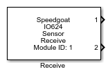

IO624 - Receive
IO624 - Receive —
Receives sensor Channel Monitor values
Library
Simulink Real-Time - Speedgoat

Description
Your model can only contain one of these blocks for each I/O module in your target
machine.
The module measures the voltage between the VDD and VSS pins. The main application
is for Sync pulse and reset detection.
Ports
Outputs
-
X (X is the receive Channel Monitor number)
The value from channel X in volts.
Data Type:
double
Parameters
The configuration details are all defined in the Setup block.
-
Module ID
This ID defines the link to the corresponding Setup block
-
Sample Time
Defines the base sample time at which this driver block gets its sample hit. This
parameter can also be set to -1 for inherited
sample time. The units are in seconds.